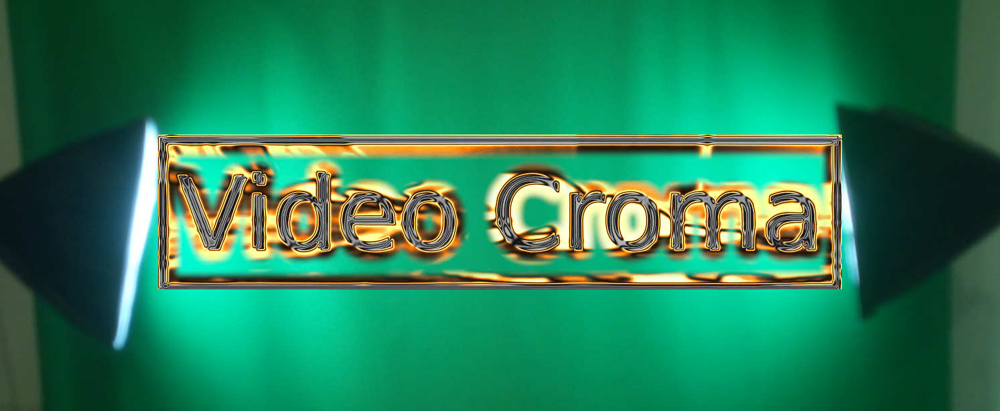
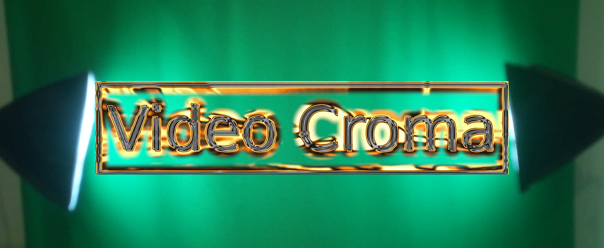

Título: Usos educativos del video croma
Autor: Grupo de trabajo del IES Fray Luis de León de Las Pedroñeras (Cuenca)
Fecha.: Marzo de 2020

Título: Usos educativos del video croma
Autor: Grupo de trabajo del IES Fray Luis de León de Las Pedroñeras (Cuenca)
Fecha.: Marzo de 2020
Obra publicada con Licencia Creative Commons Reconocimiento Compartir igual 4.0